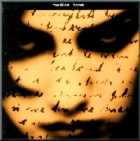
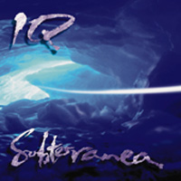

1. Some Korean proggers remember you as Arrakeen's leader
than solo
artist(carreer) so far. Your powerful
and melodic guitar sounds and Maiko's dynamic and delicate
voice made Arrakeen so specilal among the tons of the
other neo-bands..
If you don't mind, could you say
why is Arrakeen broken up and what is Maiko doing now
?
Arrakeen split up for different reasons, one of it was
Maiko getting difficult to work with because of ego
problems, but the main reason is because some members
of the band were disappointed of the lack of response
from the music business in France, and preferred to
stop.
Maiko and Eric Bonnardel( Keyboards)
feared they would not manage to make a living out of
Arrakeen after all, and decided to give up making music.
When it happened I was rather upset and decided to live
England for a while. : I was myself quite pissed off
with the music business in
France. Maiko is now
working as a specialised nurse in Psychology. As far
as I know, she doesn't
sing anymore
and completely stopped making music.
 2. I have your all cds except
"Mosaic".Especially I like all-star project
album CASINO(s/t). 2. I have your all cds except
"Mosaic".Especially I like all-star project
album CASINO(s/t).
I think this album is masterpiece
in early 90 neo-prog scene. Yeap...It is regretful that
we can't hear no more Geoff Mann's voice. I guess if
Geoff Mann is alive, he seems to be good rival with
Fish in
current prog scene. In CASINO, especially
middle and ending part of last track 'Beyond that
door' have been killed me whenever listen..
Did
you solo playing this track.? right ?
Could you
tell me how can you make great melody like this? also,
where do your main influences came from ? (musician,
group, anything)
That's right, it is me playing there.....Thank you for
this compliment !
It is difficult for
me to answer that question because the truth is:
it's all about inspiration: Whether a piece of music
inspires me or not and whether I feel inspired at the
moment I play that piece of music. I suppose there is
also a bit of "know how" and experience. But,
truly, the main thing is inspiration. And who knows
where it comes from ?
As for my influences,
well I started with the piano. I played classical piano
for a long time from when I was a child; So I've got
classical influences with composers such as Beethoven,
Mozart, Schubert, Debussy, Ravel, Satie etc. In Rock
music I 've been influenced by various bands or artists
from The Beatles to Genesis, from Pink Floyd to The
Police, Peter Gabriel, early Dire Straits.
As for
pure lead guitar playing I would say David Gilmour,
Eric Clapton, Ian Crighton (of Saga), some hard rock
players such as Van Halen..I am probably forgetting
some people here..

3. Well, I used to listen NEO like
Marillion, IQ and YOU..
But I have to admit some
of progheads hate neo-progish sound. ;-(
What do
you think NEO-progresive's definition and
how do
you feel to hear that Sylvain is neo prog artist...?
I must admit I am not very good for definitions;
especially when it comes to my own music...However I
like the word 'neo' applied to it, I find it flattering....I
am not trying to stick to a given style of music I am
only trying to express myself, to communicate. I feel
that music is good when it's inspired (which is rare)
and well done (ditto), when it expresses something or
communicates something that somehow makes you feel in
tune with all things. And I believe you can find great
works of music under many different styles or aspects.
Personally, I like all kind of stuff, I like 'new'
stuff and I like 'old' stuff. I feel it doesn't necessarily
matters if it 'sounds' new: I learned to be cautious
about the way music is marketed: sometimes some bright
and apparently expensive sound or packaging (sleeve,
etc.) can hide a lack
of inspiration or honesty
But, of course, that'S only Rock'n Roll..

4. Wow, IRIS project
featuring Pete and Ian is really fantastic..
Ian
and Pete's rythm part seems to be more aggressive and
powerful than Marillion's.
Do you familiar with
marillion members ? If you so, I envy wth you..^^
Have you any plan to work with marillion's members in
near future ?
I wanna listen your twin solo playing
with Steve 'Heavy' Rothery again..^^

Yes,
I am quite familiar with Marillion members. Or at least
used to be during my time in England.
We still speak
to each other on the phone from time to time or meet
when they are touring. Pete was interested in
playing on the next IRIS album but that was before his
accident. So I don't know if I will work again with
any of them in the future. It's not planned for the
moment being...
5. In 'Crossing the desert' you
were charge of all melodic part.(key, guitar)
As you know, there are some artists like multiple player
like you...
Roine Stolt(TFK), Gary Chandler(JADIS),
Nick Barret(PENDRAGON), Steve Wilson(Porcupine Tree)
Did you listen The Flower King's sound.? and How do
you think about Roine Stolt ?
Yeah, I like it very much. I play the album 'Stardust
we are' from time to times and enjoy it.
I also
like very much some of the Porcupine Tree's work.
6. BTW, I can see the same mascot
in IRIS and Arrakeen's cover design..
Could you
explain what is this animal(right?) or What does this
mean ?
Que signifie IRIS, pourquoi ce nom ?
This animal is a French heroic fantasy comic character
called: 'Le Fourreux' it's got special magical powers
and is very mysterious...It has been created by Regis
Loisel (a comic artist).
It was indeed ARRAKEEN's
mascot. On the Iris sleeve It's an allegoric reference
to my past in Arrakeen...

7. I heard from jay that
You're recoding for IRIS 2nd album and playing for some
gigs..
Could you tell me current status of your
next album ?
(Concept, theme, member, release date,
anything is ok) Also, I am very curious about
your voice.. ^^ Do you have any plan to include your
voice in next projet ?
or How about inviting guest
vocal..like F I S H ? or rejoining MAIKO..?
Frankly
to speak, You don't need any voice because your melody
is very abundant.
Thank you for this remark. The thing is: I also have
written some vocal material and I would love
to
see it released on the next IRIS album. So this album
will be a mixture between some vocals and some new instrumental
pieces. As for the voice I quite enjoy singing my own
songs, and it will be a new and exiting challenge for
me to record that on an album.
I haven't thought
yet of any guest singers but that is always a possibility
if I feel a song needs it....
All of the material
is already written and demoed. I had to postpone the
recording a few times because I am also working as a
producer on a different project.
So hopefully the
next IRIS album will be recorded and released sometimes
in 2000.
8. Who do you want play with ?
let me know your best line-up..
Guitar : Sylvain
Voice :
Key :
Drum :
Bass :
Any other
instrument : ?
Guitar
: Sylvain
Voice : Peter Gabriel, Freddie Mercury,
Jon Anderson, Sting,
PaulMcCartney
Key : Tony
Banks, Alain Antonelli
Drum : Stewart Coppeland,
Vinnie Colaiuta, Simon Philips, Ian Mosley
Bass
: Pete Trewavas, Chris Squire, Sting
Any other instrument
: Guitar: David Gilmour (twin guitar with David Gilmour...)
9
Thanks for interview, Sylvain..
Don't forget there
are some of your fans in KOREA Please Keep up the great
work.
Last, Would you say "HELLO" to korean
proggers, especially Korean Art Rock Club, YEBADONG.?
I hope to see your gig in SEOUL in near future
Yeah
I'd love to.
Hello to all of you music lovers of
YEBADONG.
I hope to see you one day in concert in
Korea !
In the meantime keep on listening to IRIS....
|